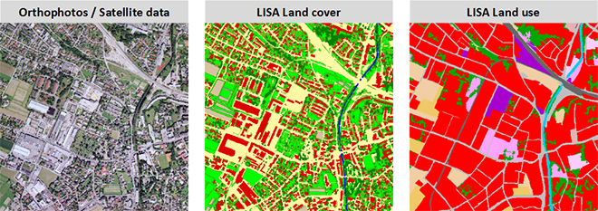

About me
 some text2
some text2
 text here.
some text2
text here.
some text2
Hey i'm Bonnie, a student at Dedan Kimathi University of Technology (DeKUT). Motivated to excel inside and outside of the classroom, enthusiatic to develop my career experience and skills and energy to contribute to a professional work environment. I joined the university back in 2016 for a undergraduade degree in Geomatics Engineering and Geospatial Information Systems. It's not just about apps. Learning to code gave me problem solving skills and a way to communicate with others on a technical level. I can also develop website and use my coding skills to get a better job. And I learned by personal research Where you build your self esteem and keep motivated.
My skills
- HTML
- Python
- C programming
About GeGIS
I am attending a program called Geomatics Engineering and Geospatial Information Systems GeGIS, a five year course. GeGIS simply deals with geological and geographical phenomena of the earth surface.
Geospatial engineers work alongside other engineers, architects and land developers to define legal land boundaries and provide essential engineering support for urban development, large infrastructure projects, the development and operation of mines and the management of the environment and resources. Geospatial engineers are the most recent additions to the engineering family. They use new and developing technologies such as GPS, satellite imagery, laser mapping and fast computing to create complex layers of interconnected geographic information. Today we can measure position very accurately. We can make maps and look down on the world from airborne and satellite platforms, and visualise the natural and built environment in 3D. Geospatial information constantly reveals new insights about our world and our place in it.
GeGIS comprises of:
- Geospatial Information Systems
- Remote Sensing
- Cartography and visualization etc.
Dedan Kimathi University of Technology
Use the google map below to locate DeKUT.
Geographic Information Systems
A geographic information system (GIS), or more commonly referred to as a geospatial information system is a system for capturing, storing, analyzing and managing data and associated attributes which are spatially referenced to the earth. In the strictest sense, it is a computer system capable of integrating, storing, editing, analyzing, sharing, and displaying geographically-referenced information. In a more generic sense, GIS is a tool that allows users to create interactive queries (user created searches), analyze the spatial information, edit data, and present the results of all these operations. Geographic information science is the science underlying the applications and systems, taught as a degree program by several universities.
Geographic information system technology can be used for scientific investigations, resource management, asset management, Environmental Impact Assessment, Urban planning, cartography, criminology, history, sales, marketing, and route planning. For example, a GIS might allow emergency planners to easily calculate emergency response times in the event of a natural disaster, a GIS might be used to find wetlands that need protection from pollution, or a GIS can be used by a company to find new potential customers similar to the ones they already have and project sales due to expanding into that market.

Planners, developers, landscape architects, and urban designers
can use Esri maps and spatial analytics
to make the case for change,
streamline the development process
Remote Sensing
Remote Sensing generally refers to the use of satellite- or aircraft-based sensor technologies to detect and classify objects on Earth, including on the surface and in the atmosphere and oceans, based on propagated signals (e.g. electromagnetic radiation). Remote sensors collect data by detecting the energy that is reflected from Earth. These sensors can be on satellites or mounted on aircraft.
Remote sensors can be either passive or active. Passive sensors respond
to external stimuli.
They record natural energy that is reflected or emitted
from the Earth's surface.
The most common source of radiation detected
by passive sensors is reflected sunlight.